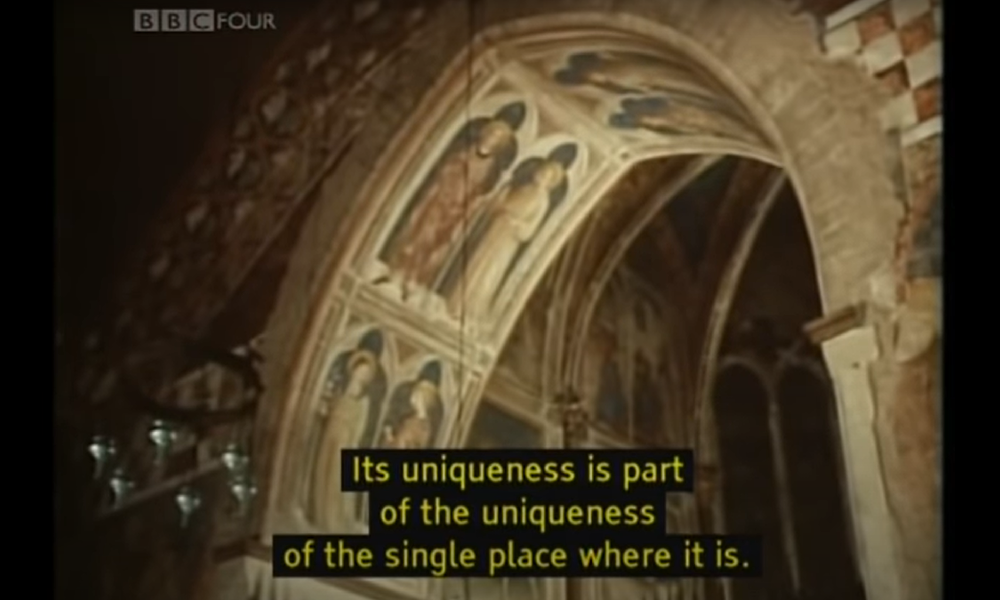
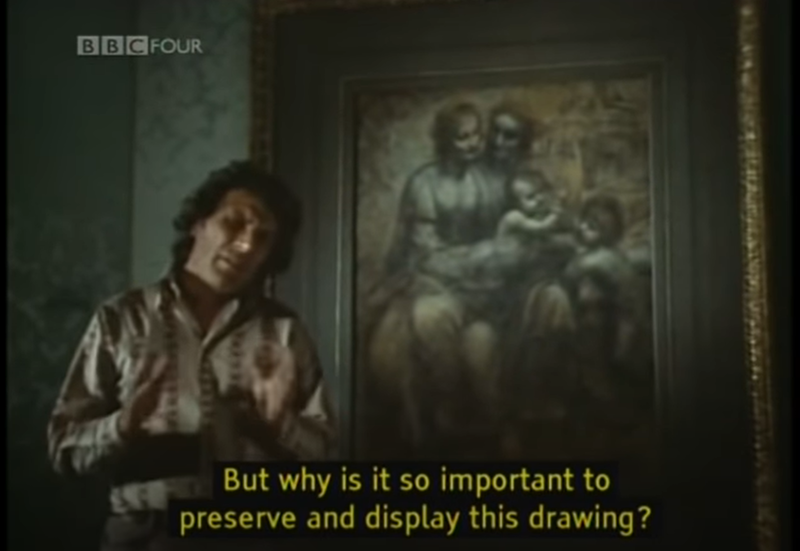
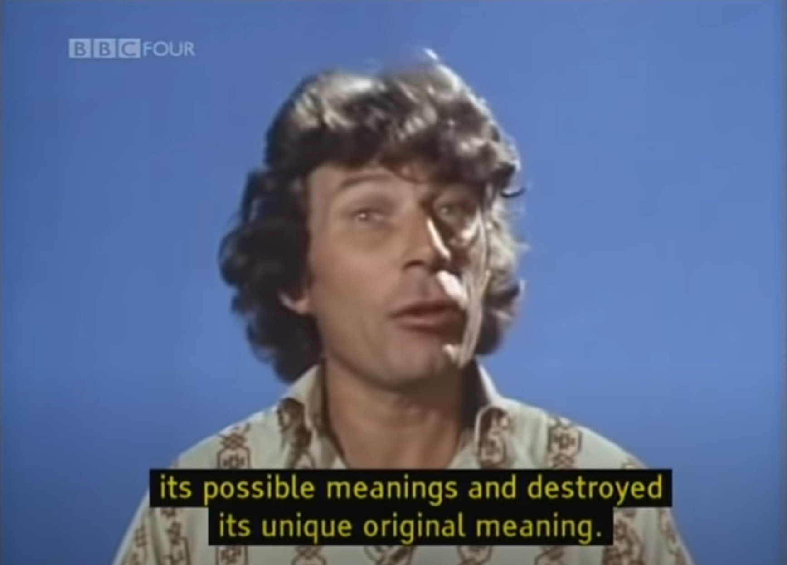

In the first episode of Ways of Seeing, by John Berger, Berger discusses how the way we see artwork has changed over time due to the emergence of new technologies.
To begin, Berger emphasizes the importance of an artwork’s surroundings. He highlights how the “uniqueness” of an artwork is also a part of where the image resides and it “confirms and consolidates its meaning.”
For example, we preserve and display Leonardo’s “Virgin On the Rocks” in a room alone behind bullet proof Perspex. This makes us think the drawing is extremely important if we feel the need to preserve it so much. Berger then goes on to question “Why is it so important to preserve and display this drawing?”
The answer lies in this quote:
“A lot more is possible but only if art is stripped of the false mystery and the false religiosity which surrounds it. This religiosity, usually linked with cash value but always invoked in the name of culture and civilization, is in fact a substitute for what paintings lost when the cameras made them reproducible.”
When cameras were made, images were suddenly able to be reproduced quickly and easily. Many people at the time had images of Leonardo’s works hanging on their wall. But, this made me wonder what elements of Leonardo’s original works were lost in translation. In the video, Berger argues that the camera “multiplied its possible meanings and destroyed its unique original meaning.”
From this, works of art have both lost and gained.